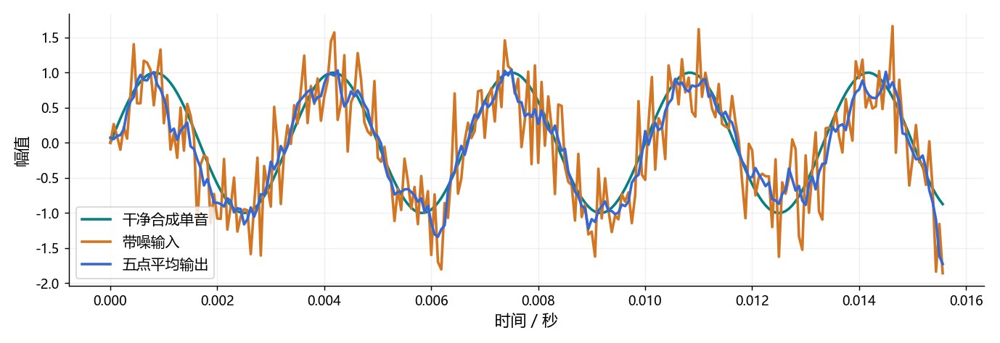

看图理解 · 跟着推演 · 对照真实结果
第17课 · 把一次降噪实验做成可信项目
用一个可重复的小实验，学习基线、数据划分、消融和诚实的结果表述。
点播放开始；点右侧小节可跳到不懂的部分。进度保存在当前浏览器。
先看视频，再动手
不必先读完正文。跟着视频暂停预测，看到运行图时解释横轴、纵轴和曲线，再做下面的自测。完整图文保留作查阅；视频讲清本课核心算例，不把看完等同于掌握全部专题。
先修：噪声、SNR、NumPy 与基础滤波；未学神经网络也能开始。
- 把项目问题写成可检查的输入输出
- 用固定数据比较一次单因素改动
- 分清教学示范和简历实验成绩
跟着运行：注释代码、实际输出与结果图
下面代码在生成本站时实际执行。这里只是教学小实验，不是完整模型训练或业务设备测评。
import numpy as np
rng = np.random.default_rng(7) # 固定随机数便于复现
fs = 16000
t = np.arange(1600) / fs
clean = np.sin(2*np.pi*300*t)
noise = rng.normal(size=len(t)) * 0.5
mixture = clean + noise
# 五点对称平均只作离线教学基线
filtered = np.convolve(mixture, np.ones(5)/5, mode="same")
snr_in = 10*np.log10(np.sum(clean**2)/np.sum((mixture-clean)**2))
snr_out = 10*np.log10(np.sum(clean**2)/np.sum((filtered-clean)**2))
print("输入 SNR", round(snr_in, 2), "dB")
print("处理后 SNR", round(snr_out, 2), "dB")
print("仅为合成单音；不是语音模型成绩")
本次实际输出
输入 SNR 3.11 dB 处理后 SNR 9.66 dB 仅为合成单音；不是语音模型成绩

闭卷自测：把数据、模型、损失同时换掉后指标提高，能否说提升由新损失导致？
不能单独归因。需要控制其他条件，只改变损失做对照，并按相同协议报告收益与失败。
逐字讲稿 · 可定位回看
如果简历同时写增强、识别、合成、大模型，但每项只成功调用过一次接口，面试很快会问到你没有验证的地方。先让一个小问题有完整证据，比堆更多名字更有用。
这一课用单声道降噪做例子：给定一条带噪输入，输出同采样率、同长度的处理结果。暂时不混入多人分离、回声消除或变声，才能明确每个错误属于哪里。
我们会运行一个非常小的合成单音实验。它不是你的真实项目成绩，而是一张练习地图，演示怎样保存基线、测量改动、写出结论范围，再迁移到真实语音数据。
在实验开始前写清输入是十六千赫兹单声道，幅度是什么范围，最长多长。输出是否同长，边界怎么处理，遇到静音或损坏文件如何记录，都应该可检查。
本例输入一千六百点，对应零点一秒。干净信号是三百赫兹单音，加上固定种子的随机噪声，得到带噪输入。这些都能从代码直接重建，不需要下载数据。
真实语音项目还要有稳定样本编号、噪声来源、许可和划分。文件顺序不是编号，输出必须带编号，否则评测时预测和真值一错位，所有结果都可能失去意义。
降噪器输出听起来更安静，可能只是把语音也压低了。如果不保留原始输入，就无法回答处理究竟保住了什么、损伤了什么，因此第一条基线就是不处理。
第二条可以是容易解释的传统方法。本课五点平均会平滑快速变化，能削弱部分随机噪声，但同时也改变信号；它不是适用于所有语音的万能增强器。
学完训练后再增加小型网络。三种方法必须使用同一批测试、同一对齐规则和指标实现，否则表中数字看似可比较，实际连测的问题都不一样。
我们把误差定义为输出减去干净参考，然后用干净能量除误差能量计算 SNR。这样滤波造成的信号失真也会进入误差，不会只因噪声听起来小就自动得高分。
这个指标需要时间对齐的干净参考。本例自己合成，所以参考确切已知；真实无配对录音没有同样的参考，不能随意找另一段干净声音来替代。
先固定随机噪声，再比较方法。若每换一次滤波器就重新生成不同噪声，分数变化同时包含数据变化，不能全部归因于滤波器。固定种子是起点，不是完整复现协议。
代码首先固定随机种子，再根据采样率创建时间轴，正弦函数生成三百赫兹干净单音。随机噪声乘零点五控制规模，但没有把它声明成某个精确预设 SNR。
五个相等权重组成平均核，卷积 mode 等于 same 返回同长度。这个对称处理使用邻近未来样点，是离线教学基线，不能直接把它叫无等待的实时实现。
最后分别比较带噪输入和滤波输出到同一个干净参考的误差。打印两项 SNR，也打印教学边界。记录限制不是谦虚，而是说明这组数字真正能支持哪种结论。
图中干净曲线有规则周期，带噪曲线围着它快速抖动，平均后的曲线通常更平滑。先看它有没有跟上干净趋势，再看峰谷是否被压缩，以及两端边界是否异常。
本次运行打印的 SNR 就来自这些数组，不是手填目标数字。判断改善应读实际输出，而不是先认定平均一定更好；换频率和窗口长度，结论可能改变。
这个信号只有一个正弦频率，不含真实辅音、停顿和多变音色。即便 SNR 提高，也只验证了这组教学输入，不能替代真实语音分组评测或听感测试。
如果把同一个人同一段录音切成很多片，再随机分到训练和测试，相邻片段的声音和背景几乎一样。模型可能记住这些条件，测试就不能证明对新人的泛化。
要声称跨说话人效果，就按说话人隔离；要研究跨设备，就留出设备。具体还可能需要会话和噪声源隔离，取决于你最终想回答的问题。
归一化统计、阈值和模型选择都只能用训练或开发阶段允许的数据。测试参考一旦被你用来改规则，它就成为已看过的分析集，不能继续包装成全新的盲测。
假设你想知道平均窗口变长是否损伤高频。保持同一干净信号、噪声和指标，只改变窗口长度，再把单音频率逐组固定测试，观察何时开始失真。
如果同时增加数据、换网络、换损失和换前处理，即使分数更高，也很难知道哪一项负责。消融的目的不是多做一张表，而是让因果解释有对照。
真实增强还要看吞尾音、音乐噪声、低信噪比以及速度条件。失败样本不是应该删掉的污点，它们告诉你方法适用在哪里，也提供下一次修改的具体方向。
一个诚实表述先说实际问题，再说自己处理的数据和实现的方法，然后给出固定测试条件下的质量、时延和资源结果，最后说一个已知限制。不要只写效果显著。
如果你复用了预训练模型，就说明复用，个人贡献可以是数据、评测、流式接入或故障分析。只有确实更新声学权重，才能写成训练或微调了声学模型。
课题组材料能否公开、合作单位能否写名，需要得到许可。水声阵列经验可迁移为信号处理与实验能力，但没有做语音识别，就不能把任务名称改成语音识别。
今天先把单音频率提高，预测五点平均是否更容易削弱它，然后运行并比较。预测错了也没关系，写清原来想法、实际现象、原因和下一次检查方法。
你的交付不必是完整平台，只要有配置、可运行入口、数据说明、结果和失败记录。别人能按同一命令复现，并能听你解释每个数组轴，已经超过一次性演示。
最后自问：这张图能证明什么，不能证明什么？如果答案是只证明固定合成条件的行为，就诚实这样写。把同样方法迁到授权真实数据，才逐步形成能投实习的项目。
适用边界与参考正文
代码使用合成单音与噪声，五点平均是离线教学基线；未跑真实语音数据或神经网络，不可将数字当个人增强项目成绩。
图、公式、代码结果均由本站制作；旁白是本地中文语音合成，不是教师真人录音，也不是 NotebookLM 生成。没有向 Google 上传项目材料。